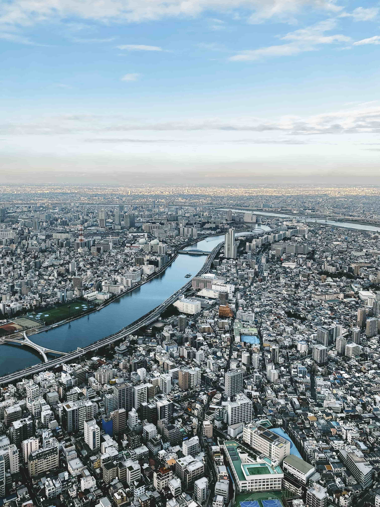

TOKYO
December 2019
One of my favourite travel destinations.
My first trip with my best friend in December.
Spectacular night views, photogenic street views, and abundant of breathtaking sceneries and temples.
Street
Night
Nature